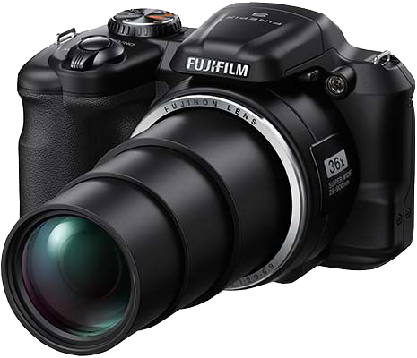
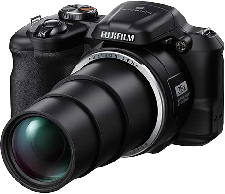

©Copyright Knappstar 2016
What do I shoot with?
 

My main camera: Nikon D3300 DSLR.
This is the camera I use the most, and is the camera which has taken most of the photos you can see on this site and the linked social media accounts.
Below are what I consider to be the important specs, more available from the above link on Nikon's site.
Type: Single-lens reflex digital camera
Lens mount: Nikon F mount (with AF contacts)
Effective angle of view: Nikon DX format; focal length equivalent to approx. 1.5x that of lenses with FX format angle of view
Effective pixels: 24.2 million
Frame advance rate: Up to 5 fps.
ISO sensitivity: ISO 100-12800 in steps of 1 EV. Can also be set to approx. 1 EV (ISO 25600 equivalent) above ISO 12800; auto ISO sensitivity control available
If you're interestd, I own 3 lenses for this camera,
The standard kit lens (Nikkor DX AFS 18-55mm f3.5-5.6 G II ED),
The Tamron AF 70-300 f4-5.6 Tele-macro LD DI, and
The Nikon AF-S 35mm f1.8 G DX Lens (prime lens)
My other camera: Fujifilm FinePix S 8600.
This is my (ever so slightly) older camera which has taken most of my travel photos. A fantastic all-in-one which has served me very well.
Below again are what I consider to be the important specs, with more available from the above link on Fujifilm's site.
Lens: Fujinon 36 x optical zoom lens, focal length f=4.5mm - 162mm, equivalent to 25 - 900mm on a 35mm format full-aperture F2.9(Wide) - F6.9(Telephoto)
Effective pixels: 16.0 million
Frame rate: Up to 8 fps.
ISO sensitivity: ISO100 / 200 / 400 / 800 / 1600 / 3200* / 6400* (Standard Output Sensitivity) * ISO3200 / 6400 is effective in image size S
Both cameras have their uses, and I find that I now use both fairly regularly depending on what it is I'm trying to shoot.
Previous